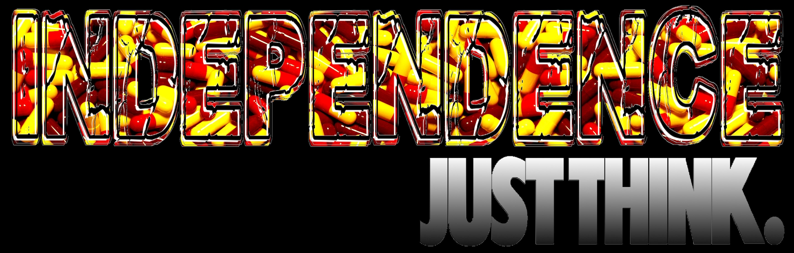

The ultimate aim of this work is simply move to think. Independence Series wants to make think about what independence means, about possibility of being independent, if somebody can be really independent. This series also wants to highlight simplistic speeches and manipulation done around these concepts, usually hidded behind subterfuges or ambiguous synonymous. That's the reason because this text is more introductory than explanatory, to leave all possible meanings opened. So, this space is opened to other people's thoughts. Here I have uploaded some videos of performances of Independence series. They are sketchy, of course, but nobody has neither the time, nor the intelligence nor the truth to do such a complex task. That's just for think.
Independence series it's arrived to its end by the moment. It wasn't a question of dates nor considering that all is already said. On the contrary, this series ends with a lot of unfinished projects. Behind this work there was always an intention to make think that nobody has the absolute truth, but in the recent times we have been able to see that even nobody has the monopoly of the absolute lie. But does anyone really want to think? The series has ended, but the rage remains. Isaac Asimov titled the chapters of one of his books with this sentence of Schiller: “Against Stupidity...” “...The Gods Themselves...” “...Contend in Vain?”. Neither I can.
Barcelona, November 2012